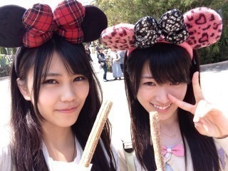
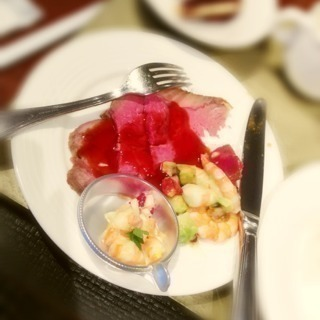
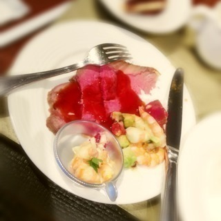
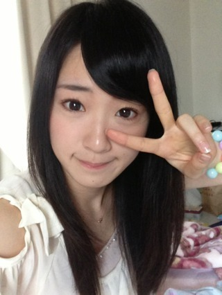

2013/0517Fri（´-`）.｡oO(か ずみん×169
こんにちは＊
3連休なんて何ヶ月ぶり
だっただろう...
2日前まで久しぶりの休みを
満喫していました( ∩ˇωˇ∩)
1日目
ひなちゃんとディズニーシー☆
GW後の平日だったので
めっちゃ空いてた(σ´∀｀)σ

めっちゃ食べ歩きしました♪
めっちゃ食べ歩きしました♪
楽しかった〜^ ^
2日目
ひなちゃんと靴買いに行く、
夜は友達と寿司！！(安いやつ)
3日目
父とMちゃんとビュッフェへ♪
すごく豪華で
肉をその場で焼いてくれました(*ﾟﾛﾟ)!!
めっちゃ美味しかったT^T
私のお気に入りは
ローストビーフだったよ♪

肉をその場で焼いてくれました(*ﾟﾛﾟ)!!
めっちゃ美味しかったT^T
私のお気に入りは
ローストビーフだったよ♪

たらふく食べました♪♪v_v
はい、
この3日間でデブ決定！！笑
と思ったら体重は減ってたオチ。
人間の身体ってわからんね(´-ω-`)
本当は地元に帰りたかったなぁ...
でも平日に帰っても友達はみんな
仕事とか学校だから(´･ｪ･｀)
さて、
連休はまたしばらくないだろう。
お仕事頑張ります。
春夏はおしゃれが楽しみ♪
そして髪伸びた！
今日はボムの撮影だったよ！
楽しかった(*∩ω∩)
朝日新聞の企画も最近沢山^_^
脳が腐ってきてるから
頭使わないとね！
それでは、今日も明日も明後日も
頑張ります〜♪

ばいっ(^o^)/
2013/05/17 16:12


コメント(451)
ゆっくり休めたかな＼(^o^)／
プリンシパル楽しかったよ(*^O^*)
リフレッシュ！
プリンシパル
お疲れ様でした！！
かずみん
かわいい(///∇///)
お忍びディズニーシーか……
お忍びじゃなきゃ行けないのは辛いよね
これからも乃木坂がんばれ！
私も千葉っ子だよっ!!!
ディズニーうらやまあああＯ(≧∇≦)Ｏ
お休み満喫したようでなによりです♪
写メきゃわわ☆☆
これからも応援してまーっす(*^^*)
休みはゆっくり休めたようだね(^o^)/
またお仕事始まるだろうから身体に気をつけて！！！
またコメントします(*^o^*)
今日はこの辺で！！
うらやましーっ^o^
ディズニーいきたーいっ‼
かずみん可愛いーっ(￣▽￣)
なんか久々やな(笑)
休み満喫したみたいで、、、
ディズニーいいなー
行ってみたい
夢の国いったことない←
でも先週USJ行ったし
だからなんやねんって話ですわ(笑)
明日からもガジ頑張ー！
ほなねﾉｼ
|∀°)＜なかなか充実した休みのようで
|∀°)＜美味しい物食べたくなるよねー
|∀°)＜もうちょっと太っても
|∀°)＜大丈夫よ(笑)
|∀°)＜ていうか
|∀°)＜髪の毛伸びたねー
|∀°)＜これはもう
|∀°)＜ポニーかお団子にするしかだねー
|∀°)＜よろしく
|∀°)ﾉｼ
( ・∀・)つ
３連休でプリンシパルの疲れも吹っ飛んだかな？ チョロス、ウマソ！
大阪公演も２週間後ですね。
６Thのシングルも大阪公演プリンシパルも気になります。
東京スポーツ新聞でらりんと給食レポート載ってました。
脱脂粉乳マズイ。笑
3連休満喫できてよかったね
かずみん可愛い(^^ゞ
ディズニーいきたい。
かずみん ひなちゃんかわゆいなあo(^▽^)o
休みゆっくり過ごしたみたいでよかった。
撮影や収録お疲れ
新曲楽しみにしとるよ！
体に気をつけてゆっくり休んでください
また明日から忙しいと思うけど頑張ってね～
体調に気を付けて！
プリンシパルお疲れ♪
３日間見に行ったけど全部楽しかったよー♪
誕生日の日もかずみん見れたし(笑)
幸せやー♪
大阪も行きたいけどさすがに……
遠いし、授業あるし(笑)
ハイタッチというものをしたかった(笑)
７月まで会えないもんね～耐えきれんわー(~o~)
でもまぁ待つしかないよね(笑)
楽しみにしてます！
あと２ヶ月後まで……
でわ！
明日も頑張ろうね～(^^)/
ひなちゃんとやっぱ仲良いんだねー！
ローストビーフうまそー！
三連休めっちゃ楽しんだんだねw
髪長いのいいね！！
てか画像可愛すぎ(*´`)
お仕事がんばってねー！！
ではー(￣^￣)ゞ
お休みよかったー。
さしぶりだよね。ゆっくりしてね。
ディズニーよかったねぇ。俺は遊んでばかりいたから忙しいけど、頑張るね。
梅田プリンシパル、花送るね。
6thそろそろ撮影始まるかな？頑張ってね。
かずみん。最近一眼使ってる？？？
載せて載せて〜〜〜*\(^o^)/*
俺は。。。最近撮ってないけど。
な〜ちゃんとか〜♪
他のメンバーで言ったら
な〜ちゃんとか〜〜〜♪
しっかり休んで肌も休めようね*\(^o^)/*
私も春夏の洋服楽しみです(^ω^≡^ω^)♡
髪の毛長いかずみん可愛い！！
長い方が好きですっ♪
ひなちゃんと仲良いね(* >ω<)♡
私も夢の国行きたいなあ...
川後さんとデートとか凹みました(T ^ T)
高山さん………。。
ひなめろですね(￣▽￣)！笑
お仕事頑張ってね！！
今日も１日お疲れ(=ﾟωﾟ)ﾉ
☆☆☆☆☆プーさん☆☆☆☆☆
今日も世界一可愛いね！
3連休満喫したみたいね(^^)
飴と鞭コンビでTDSとか最高だw
耳もヤバいくらい可愛いのぉ(T-T)
靴はどんなの買ったの？
ローストビーフとか…
お腹空いてきたよ(^^;)
写真可愛い可愛い可愛い可愛い可愛い可愛い可愛い可愛い可愛い可愛いよおおおおおおおおおおおおおおおおおおおお！
おいちゃんも頭使わんとトロけてきてるから気をつけないとσ(^_^;
ボム楽しみ！！！
らびゅ！
ディズニーの写真可愛いすぎる(●´ω｀●)
ひなちゃん裏山！
自分もかずみん見習って頑張るよヾ(＠⌒ー⌒＠)ノ
最新の高山が最高の高山。
空いてるディズニーシーなんて最高じゃないですか＼(^o^)／写真もすごく楽しそうで、こっちまで嬉しくなります。耳付きすごく可愛いです‼
リフレッシュ後の仕事は大変だと思いますが、頑張って下さい。
体調には気を付けて～
そりゃあんだけ心身共に疲労しただろうから体重も減るでしょうにww
なんにしてもお疲れなようで、、
大阪公演も頑張って！
こんばんわ
取材お疲れ様でした
3連休いいですね
めっちゃ楽しそうですね
また明日からがんばってください
休みが満喫できたみたいで良かったですね
川後陽菜ちゃんとは本当に仲が良いんですね(￣▽￣)
次の休みは地元に帰れると良いですね^_^
ボム楽しみにしてます(￣▽￣)
自分も最近は割と本格的に忙しくなって来ました
毎日いろいろ大変ですが、一実さんもどこかで頑張っていると思えばできる気がするので頑張ります！
次のシングルの握手会の予約が始まったので日程決めて申し込もうと思います
頑張ってお金ためなきゃ笑
ではまた！
公演お疲れ！
3連休いいな～
自分は今日やっとテストが終わったよ～(^^)v
寝不足でヤバい…
っていうかかずみんは変装とかしなくてもバレないの？
それじゃあ、これからも頑張ってね!(^^)!応援してるよ～
お休み(^_^)ゞ
かずみん可愛い！
がんばっ！☆彡
これからも頑張ってください！
かずみんお疲れ様！
プリンシパルめっちゃ面白かったし、演技も良かったです＼(^o^)／
握手会行くので、よろしくお願いします！
GWは大忙しだったもんね…
連休はリフレッシュできたかな？
休めるときは休まないとね！
そろそろ6thシングル絡みのお仕事も始まって忙しくなると思うけど、頑張ってね！(^^)
かずみん大好きすぎる人間です
かずみんてひなちゃんと仲いいんだ
三連休あって二日間遊ぶってかなり仲いいんだね
ディズニーランドでの食べ歩きめちゃくちゃ楽しいよね
遊園地なのに本当に美味しいものおいてある
6枚目のシングル楽しみにしてるよ
二期生のメンバーで伊藤かりんちゃんだけは選抜に
入ってくる気がする、俺の予想だけど・・・
かずみん大好き人間でした。
久しぶりにディズニー行きたくなった〜(￣◇￣;)
それにしても随分と充実した日々をお過ごしのようで･･･。
体重が減ってたのは色々出かけたことが運動になったからかな？まぁ、かずみんはもともと細いほうだと思うし、ちょっとくらい構わないんじゃないかと思うけどww
良いリフレッシュになっただろうし、また活動頑張ってね!!
Ｐ.Ｓ. 完全な私事だけど、今日とある企業から内定の通知を頂きました。結構握手会行ってたけど、実は俺就活中だったんです(笑)
これからは後ろめたさを感じることなく会いに行けるぜ。７月と９月の関東会場に行く予定。まだまだ先だけど、今から楽しみにしてるね♪
かずみん、
貴女は天使ですか？
ディズニーいいなあ*\(^o^)/*
梅田プリンシパル楽しみにしてまーす(((o(*ﾟ▽ﾟ*)o)))
ガンバッ
ボムの撮影お疲れ様♪
てかさあ、ひなぴょんとシーとかマジ裏山ぁ(*´∀｀)
太ったと思ったら痩せてたとか最高のオチだね(笑)
体調管理気をつけてお仕事頑張ってね♪
気を切り替えて、がんばっていこー♪(*´ー｀*)
食べてすぐ体重増えてなくても、後々響いてくるんじゃない？(´□｀;)
気を付けなきゃね♪(^^)b
脳が腐ってきてるんなら、新しいのに変えるしか♪笑
なんか楽しかった様子が
文面から伝わってくるよ〜笑
ディズニーランドあんまり
行かないって言ってたよね？(˚ଳ˚)
久しぶりのディズニー楽しそうで
わたしも行きたくなったよ♡♡♡
そしてそしてわたしも
ローストビーフ食べたい……泣
今度は地元に帰ってゆっくり
出来ると良いねo(｀ω´ )o
これから6thの撮影とか大変だと
思うけど、頑張ってねU・x・U
楽しみにしてるよー！！
三連休充実してたみたいでなにより！笑
ほんとひなちゃんと仲良いねー笑
デブ活デブ活(笑)
それじゃあまた明日から仕事頑張って！
衛藤さんによろしく～！
久しぶりのコメントでした！笑
ひかるん
髪長いの可愛いよ〜♡わたしもめっちゃ長いよ〜ッ！
かずみん一緒にポニーガールになろうよ〜(〃▽〃)ﾎﾟｯ←
ゆーたんなう
公演の疲れも連休で癒されたかな(≧▼≦)
てかかずみんのデブ…想像できんわ(;^_^A
しかも脳腐りてΩÅΩ;
だから最近日本語に飽きてきたのかな(笑)
あ！
髪…どこまで伸ばすの(・・?)
一瞬…優子に見えたのは内緒(≧▼≦)
今日も1日お疲れちゃん
ぢゃぁ
(一実o^∀^o46)
↑
これ大事
また明日から頑張ってー！
コメントする